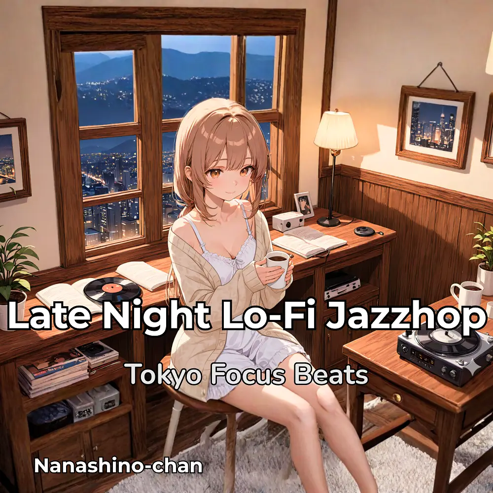

Lo-Fi · Jazzhop · Chillhop
Lo-Fi Jazzhop for Late Night Focus | Relaxing Piano & Horn Chillhop Beats
Nanashino-chan
Nanashino-chanの「Lo-Fi Jazzhop for Late Night Focus | Relaxing Piano & Horn Chillhop Beats」。Lo-Fi / Jazzhop / Chillhopを楽しめる全25曲のインストゥルメンタル作品です。「Nightfall Espresso / Midnight Sketches」などを収録。気になる曲を試聴して、配信サービスでお気に入りを見つけてください。
2026-01-16 リリース · 25 曲 · Instrumental
アルバムを試聴
気になる音楽を、ここから。
曲を選ぶまでジャケットを表示します。試聴にはApple Musicを使用します。プレイヤー内で曲を選んでください。
APPLE MUSIC PREVIEW
試聴する曲を選んでください
曲を選ぶまでジャケットを表示します。試聴にはApple Musicを使用します。プレイヤー内で曲を選んでください。
再生できない場合は、配信サービスでアルバムや曲を開いてください。
配信サービスでアルバムを探す
「検索」のリンクは検索結果を開きます。サービス内でアルバムや曲を選択してください。
収録曲一覧 25
- 01Nightfall Espresso
- 02Midnight Sketches
- 03Gentle Horns in the Dark
- 04Coffee Steam Reflections
- 05Sleepless City Lights
- 06Blue Hour Conversations
- 07Jazzy Moonlight Drizzle
- 08Quiet Café Corners
- 09Late Sip Nostalgia
- 10Piano Whispers & Horn Echoes
- 11Mocha Groove Nights
- 12Clouded Thoughts, Clear Coffee
- 13Horns Over Empty Streets
- 14After Hours Serenade
- 15Espresso Rainfall
- 16Window Seat Reverie
- 17Breathing in the Night
- 18Coffee & Vinyl Scratches
- 19Chilled Horn Echo
- 20Gentle Piano, Strong Coffee
- 21Quiet Horns, Warm Cup
- 22Lo-Fi Mocha Dreams
- 23Steam Rising Slowly
- 24Deep Night Reflection
- 25Closing Time
SNSで使いたい音源を探す
「Nanashino-chan ＋ 曲名」をコピーして、SNSアプリの音源検索に貼り付けてください。音源の表示は地域やアカウントにより異なります。コピー機能は利用許諾を付与するものではありません。